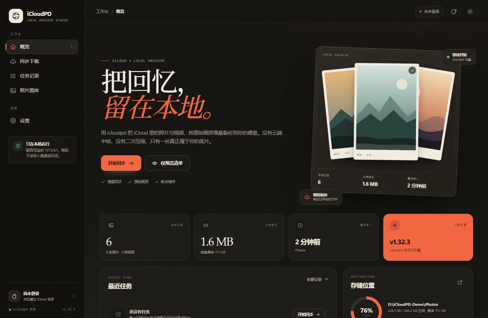
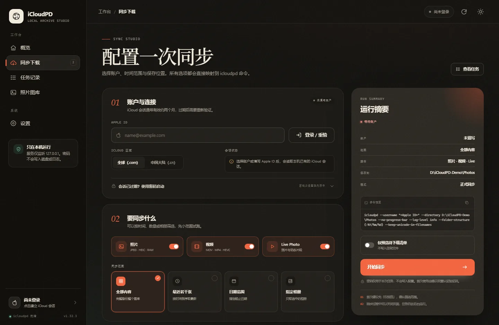
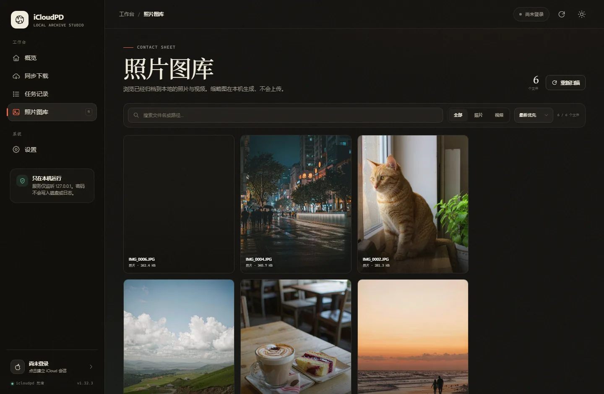
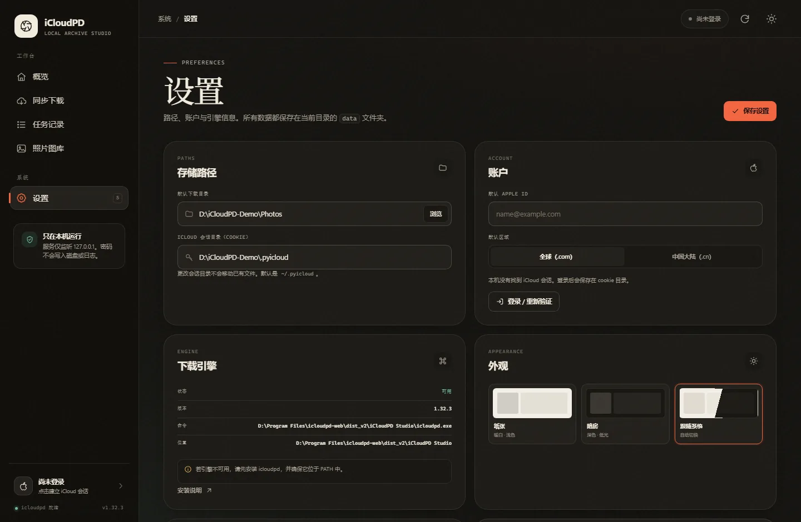

网页版只能一张张点
原图下载、批量选择与断点续传都受限，中途断了往往要重新来。iCloudPD Studio 直接调用 icloudpd，按目录结构整批拉取。
2026 Qoder 高校创造力大赛 · LifeHack 生活娱乐
iCloudPD Studio 给开源命令行工具 icloudpd 补上一层桌面界面。双击打开，选好范围，就能把 iCloud 里的照片与视频按原始画质增量备份到本地磁盘——没有云端中转，没有二次压缩。

界面截图使用演示数据，不含真实账户信息。
TRY IT
浏览器里的演示复刻了同一套配置逻辑：每个选项都会实时映射为 icloudpd 命令。它不连接 iCloud，也不会上传任何内容；真正的下载由你本机的引擎完成。
$ icloudpd --version version: 1.32.3 引擎就绪。配置左侧选项，然后开始模拟同步。
你的 Apple ID 正在新设备上登录。输入验证码继续（演示：任意 6 位数字）。
CONTACT SHEET
演示素材，用于展示真实应用里的本地图库；不是任何账户的真实照片。
没有匹配的文件。
WHY
原图下载、批量选择与断点续传都受限，中途断了往往要重新来。iCloudPD Studio 直接调用 icloudpd，按目录结构整批拉取。
同步范围、相册、媒体类型、目录结构、尺寸与去重策略，全部变成结构化表单；右侧实时生成命令，先预览再执行。
这个应用只监听 127.0.0.1，没有账号系统、遥测或云端中转。照片只从 iCloud 走到你的磁盘，中间没有第二个服务器。
FEATURES
界面不重写任何下载逻辑。它只负责拼参数、起进程、读输出、接住验证码——icloudpd 仍是唯一的执行者。
识别 icloudpd 的密码与验证码提示，把输入框推到任务面板；填完写回子进程 stdin，识别不到还有手动输入兜底。
stdout 实时接入，已下载、已跳过、错误三路计数与耗时同时显示；长任务不再是一行行滚动的黑屏。
扫描下载目录生成缩略图，HEIC 由 pillow-heif 解码，视频首帧交给 ffmpeg；支持搜索、照片/视频筛选与灯箱预览。
自己实现目录浏览接口，直接列出 C:/D:/E: 所有磁盘，从根目录开始逐级进入，不把备份塞进系统盘。
读取 ~/.pyicloud 里已有的 cookie 与 session，展示会话状态；有效时可以留空密码直接开始同步。
下载后删除、清空「最近删除」、只保留最近 N 天，这三类不可逆操作一律弹确认框，不让你手滑。
2026.11.19 · v1.0.2 更新
v1.0.2 将运行库与下载引擎装进同一个 EXE，修复下载版 DLL 加载失败，并增加浏览器兼容模式。保留完整图库统计、缩略图并发与媒体预览优化；在线体验仍是模拟演示，照片只在本机保存。
Python、桌面运行库、icloudpd 引擎与 HEIC 解码库均已内嵌，不再依赖旁边的 DLL 或引擎文件。修复 Windows 下载来源标记引起的运行库加载失败，不要求修改安全策略。
WebView2 或 .NET 桌面组件不可用时，自动打开兼容控制窗并使用默认浏览器。请保留控制窗；关闭它会停止本次启动的服务与下载。需要可用的现代浏览器。
优先使用程序旁的 data/；无法写入时，改用当前用户 LocalAppData 下的 iCloudPD Studio/data。不会自动迁移旧配置，请核对下载位置。窗口尺寸也会适配较小屏幕。
HOW IT WORKS
界面是本地页面，API 只监听 127.0.0.1；icloudpd 直接连接 iCloud 下载到目标目录。没有账号系统、遥测或云端中转。
关闭窗口会自动停止由桌面版启动的本地服务与任务；清理进程树时连子进程一起收掉，避免遗留进程继续占用会话。
密码不写配置、不写日志，只在启动子进程时留在内存并作为参数传递。介意的话，先通过「登录 / 重验」保存会话，之后留空密码运行。
GET STARTED
不需要 Python，不需要单独安装 icloudpd。配置、日志与缩略图优先保存在程序旁的 data/；无法写入时使用当前用户的 LocalAppData 目录。
下载 47.8 MiB 的 Windows x64 可执行文件，保存到本机目录，无需解压。升级前先关闭旧版并备份配置。
引擎已内嵌。桌面组件不可用时自动切换浏览器模式；请保留兼容控制窗，并核对数据目录与下载位置。
输入 Apple ID，按任务面板提示完成双重认证；会话保存后，后续同步通常不再需要密码。
建议先勾选「仅预览待下载清单」，确认范围与右侧生成的命令，再正式同步。
任务记录看实时日志；照片图库浏览已经落地的文件。中断后重跑同一配置即可增量续传。
BUILT WITH QODER
桌面应用本体是赛前完成并已开源的实现；本次参加 2026 Qoder 高校创造力大赛，用 Qoder 完成了在线体验站、演示引擎与 Qoder Sites 部署。
WebView2 窗口 + 本地服务 + 任务桥接，双重认证提示接入任务面板。
双 exe 架构：窗口壳与独立 icloudpd 引擎；发布 v1.0.0，zip 61.9 MB。
用 Qoder 复刻同步配置流程、实时命令预览、模拟任务与本地图库，浏览器打开即可体验。
静态站点公网发布，评委无需安装即可访问；桌面版通过 GitHub Release 下载。
用 Qoder 优化完整目录统计、缩略图并发与媒体缓存，修正视频分段读取；新增 48 项回归测试，本机运行 46 项通过、2 项因符号链接权限跳过。改动已合并至源码主分支，并随 v1.0.1 免安装包发布。
v1.0.2 内嵌运行库与引擎，修复下载来源标记导致的 DLL 加载失败，增加浏览器兼容窗与数据目录回退。86 项回归测试中 84 项通过、2 项因权限跳过；目前仅在 Windows 11 x64 实测。



说明：为符合大赛对开发过程的要求，作品帖会附上本次 Qoder 会话截图与本轮改动清单；桌面应用本体与提交历史在开源仓库中可查。
DOWNLOAD
Windows x64 单文件 EXE。无需解压，Python、下载引擎与 HEIC 解码库均已内嵌。
需要自己的 Apple ID 才能真实同步；没有账号也可以完整浏览界面、配置参数与本地图库。
兼容说明：目标为 Windows 10/11 x64，目前仅实测 Windows 11；不支持 32 位 Windows，ARM 未验证。缺少桌面组件时使用现代浏览器，不能保证任意配置均可运行。
版本说明：修复下载版启动失败，支持浏览器与数据目录回退，保留图库及预览优化；视频首帧仍需另装 ffmpeg。查看本次更新说明。
FAQ
在线演示不需要账户，所有选项都在浏览器里模拟。桌面版的界面、配置与本地图库也可以直接浏览；只有真实同步需要你自己的 Apple ID，这是 icloudpd 登录账户的前提。
不会。本地服务只监听 127.0.0.1，没有账号系统、遥测或云端中转。下载由你本机的 icloudpd 直接连接 iCloud 完成，文件直接写入目标磁盘。
网页版偏浏览与少量下载；这里按目录结构整批拉取原图，支持增量、断点续传、双重认证会话、实时日志和本地图库，适合几万张照片的归档。
密码不写配置、不写日志，只在启动 icloudpd 时留在内存，并作为子进程参数传递。本机其他有权限的进程在任务运行期间可能看到该进程参数；介意的话，先通过「登录 / 重验」保存会话，之后留空密码运行。
不能。这是 icloudpd 上游的限制，不是界面加的。ADP 账户无法通过 icloudpd 登录。
应用开源且免费（MIT）。iCloud 存储费用仍由 Apple 收取；这个工具只负责把已经在 iCloud 里的内容备份到你自己的磁盘。